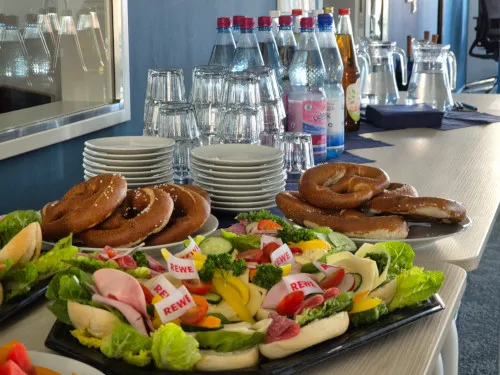
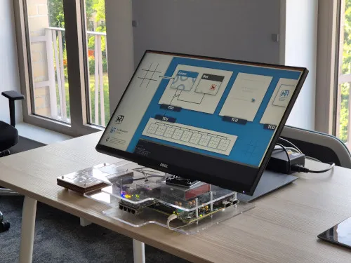

Thu., 18:00 o'clock, May 8th @ Genode Labs
A regular meetup for all people in Dresden and the surrounding area working in systems context. This includes but is not limited to:
Typically, we have 20-30 attendees.
Our third and largest meetup to date brought together 32 attendees at the APB building, hosted by Prof. Horst Schirmeier. The evening featured four engaging 10-15 minute lightning talks:
After that, we had drinks and pizza with lively technical discussions until 22:15 o'clock.
We had our second meetup at the Barkhausen Institute near Postplatz. Although it was summer vacation time, we gathered 15 people from various companies and educational/research institutions. After an interesting lightning talk by Michael Roitzsch (BI), a lively discussion about the M3 research project followed.
 This was the first meetup after the long Corona break. Previously, the meetup was called Mikrokernstammtisch. Now, it is called systems meetup. We had 28 attendees from multiple local companies and the TU dresden. It was a great kick-off! The event had pizza and drinks sponsored by Wirtschaftsförderung Sachsen GmbH.
Usually we have attendees of people working at:
Every 3-4 months, usually on a Thursday 18:00 to 22:00 o'clock. The location changes. Feel free to reach out and host a meetup!
Dresden has a rich ecosystem of companies and research in the field of operating systems and systems engineering in general. Especially, between ~2000 and ~2017, there was a "golden era" of microkernels, both in academia and various local companies. That's where the term ukvly (microkernel valley) originates from.